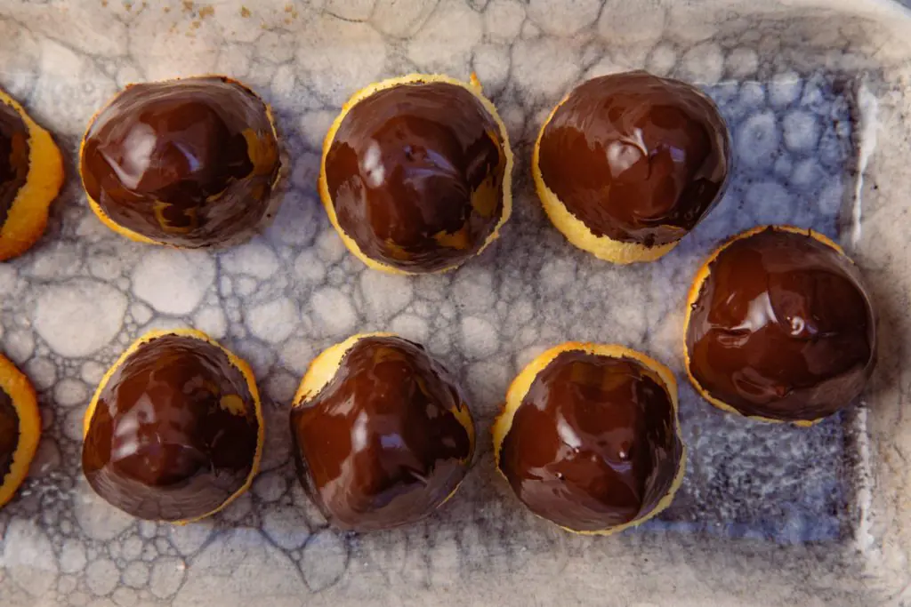

Coquitos
Ingredientes:
- 250gr Coco rallado
- 2 Huevos
- 50gr Azúcar
- 1 cda Crema de leche
- Chocolate fundido
Preparación de la Receta:
- Mezclar con las manos en un bowl coco rallado o pulpa, huevos y una vez integrado agregar el azúcar tamizada y unir.
- Añadir la crema de leche, mezclar y llevar a la heladera por 15 min. Con las manos dar forma cónica formando los coquitos.
- Acomodar sobre placa de horno con papel siliconado o enmantecar la placa en caso de no tener papel siliconado.
- Precalentar el horno por 15 minutos y cocinar por 15 minutos a 160ª C.
- Dejar enfriar y sumergir la parte superior del cada coquito en chocolate fundido a baño maría
- Llevar a la heladera por 1 hora y disfrutar con unos ricos mates.
